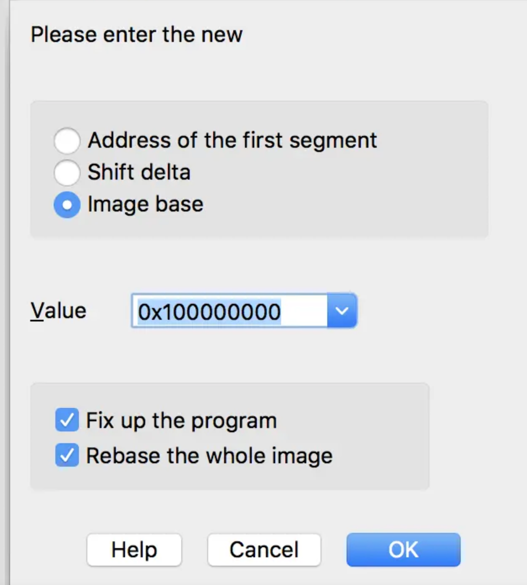
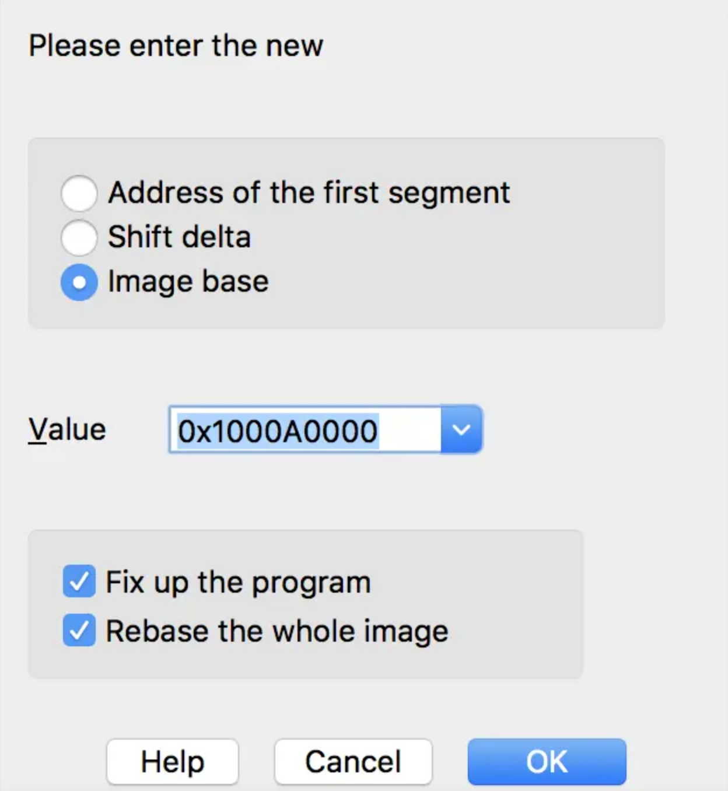
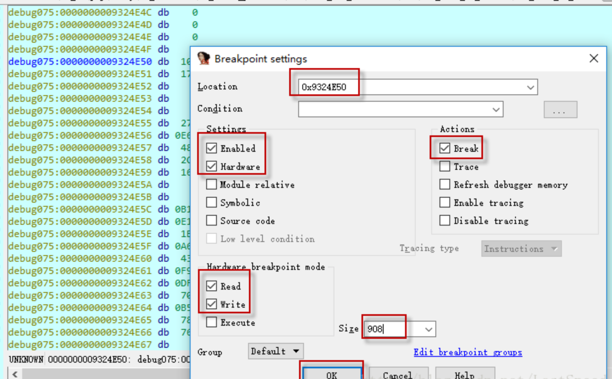
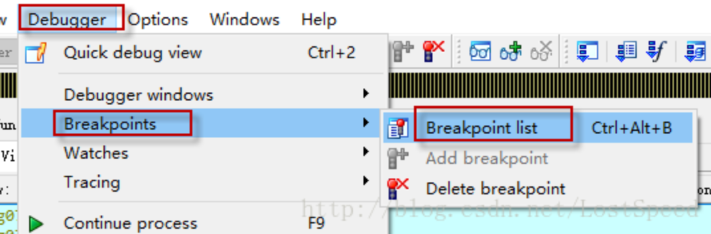
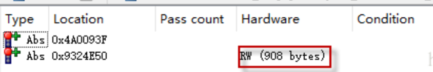

IDA工具
修改于: 2024-03-09IDA是一款强大的反编译工具, 支持跨平台
官网: https://hex-rays.com/ida-free/#download
IDA全称是交互式反汇编器专业版（Interactive Disassembler Professional），人们其简称为IDA， 是目前最棒的一个静态反编译软件，为众多0day世界的成员和ShellCode安全分析人士不可缺少的利器！
IDA Pro是一款交互式的，可编程的，可扩展的，多处理器的，交叉Windows或Linux WinCE MacOS平台主机来分析程序， 被公认为最好的花钱可以买到的逆向工程利器。IDA Pro已经成为事实上的分析敌意代码的标准并让其自身迅速成为攻击研究领域的重要工具。 它支持数十种CPU指令集其中包括Intel x86，x64，MIPS，PowerPC，ARM，Z80，68000，c8051等等。
IDA（Interactive Disassembler）是一款强大的逆向工程工具， 用于分析和逆向编译二进制文件（如可执行文件、动态链接库等）。 它提供了广泛的功能和特性，使逆向工程师能够深入研究和理解二进制文件的结构、逻辑和功能。
以下是一些IDA的主要特点和功能：
- 反汇编和分析：IDA能够将二进制文件反汇编为可读的汇编代码， 使用户能够查看和理解程序的底层指令和操作。 它可以对程序进行静态分析，提取函数、变量、控制流图等信息，并提供高级的图形化界面来展示分析结果。
- 交互式调试：IDA具有内置的调试功能，可以与调试器集成， 允许用户在逆向分析过程中跟踪和调试二进制文件。 它支持断点设置、单步执行、寄存器和内存查看等调试操作，帮助用户理解程序的执行过程和状态。
- 可扩展性：IDA支持插件和脚本，使用户能够根据自己的需求定制和扩展工具的功能。 用户可以编写脚本来自动化分析任务、执行自定义的分析算法或添加新的功能模块。
- 支持多种平台和文件格式：IDA可以处理多种不同的二进制文件格式和处理器架构，
- 包括x86、ARM、MIPS等。它还支持多个操作系统，包括Windows、Linux、macOS等。
IDA在逆向工程、恶意代码分析、漏洞研究等领域被广泛使用。 它为逆向工程师提供了强大的工具和功能，以帮助他们深入研究和分析二进制文件， 理解程序的内部工作原理，并发现其中的潜在问题和漏洞。
入门教程: https://blog.csdn.net/qq_47403671/article/details/119939585
布局
- 左侧窗口为函数列表窗口
- 右侧窗口为IDA反汇编所得的汇编代码
- 最下侧窗口为文件在反汇编过程中的信息。
菜单
- File：用于打开、新建、装载、保存、关闭一个文件或是数据库
- Edit：用于编辑反汇编代码
- Jump：用于跳转到某个位置、地址或是一个窗口
- Search：用于搜索代码段、数据、错误等等
- View：用于显示文件内容的显示方式
- Debugger：调试器，集成在IDA中
- Lumina：对元数据进行各种操作
- Options：可以进行一些个性化的设置
快捷键
- Ctrl+Enter
- 前进
- Esc
- 后退
- space(空格)
- 切换视图格式或者代码格式
- A
- 显示硬编码-以字符串显示
- C
- 显示硬编码-以code形式显示
- D
- 显示硬编码-以数据形式显示, 按一次表示1个字节, 2次表示两个字节(dw), 3次表示4字节
- U
- 显示硬编码-undefined (以原始字节显示)
- G
- 跳转到给定的地址
- ALT + T
- 搜索
- CTRL + T
- 再次搜索
- N
- 更改变量的名称
- P
- 创建函数
- ALT + Q
- 修改为指定的结构体类型 (全局变量)
- T
- 修改为指定的结构体类型 (局部变量)
- ; (分号)
- 写注释 (注释会在调用/引用位置同步显示)
- : (冒号) + shift + ; (分号)
- 写注释 (注释只会在写的位置显示)
- X
- 查看引用, 对着某个函数、变量按该快捷键，可以查看它的交叉引用
- y
- 更改变量的类型
- F2
- 在所在行下断点
- F5
快速反汇编，将文件汇编语言转换成伪代码，便于使用者对其进行分析。
可以将ARM指令转化为可读的C代码，同时可以使用Y键，对JNIEnv指针做一个类型转换，从而对JNI里经常使用的JNIEnv方法能够识别
比如快速转换为C
尽量不用, 因为不会很准确, 识别不了的地方会省略, 且没有直接看汇编代码清晰
- F7
- 单步步进, 单步进入调试
- F8
- 单步步过, 按照顺序一行一行，单步调试
- F9
- 继续运行程序, 直接跳到下一个断点处
- F4
- 运行到光标所在行
- Ctrl + F7
- 直到该函数返回时才停止
- Ctrl + F2
- 终止一个正在运行的进程
- Shift + F12
- 查看String, 快速查看so文件中的字符串信息，分析过程中通过一些关键字符串能够迅速定位到关键函数
- Ctrl + s
有两个用途，
- 在IDA View页面中可以查看文件so文件的所有段信息
- 在调试页面可以查看程序中所有so文件映射到内存的基地址
注解
tips: 在进行so调试过程中，很有用的一个小技巧就是IDA双开，
一个用于进行静态分析；一个用于动态调试。比如说调试过程中要找到一个函数的加载到内存中的位置，
IDA部分前缀含义
sub_ 指令和子函数起点 locret_ 返回指令 loc_ 指令 off_ 数据，包含偏移量 seg_ 数据，包含段地址值 asc_ 数据，ASCII字符串 byte_ 数据，字节（或字节数组） word_ 数据，16位数据（或字数组） dword_ 数据，32位数据（或双字数组） qword_ 数据，64位数据（或4字数组） flt_ 浮点数据，32位（或浮点数组） dbl_ 浮点数，64位（或双精度数组） tbyte_ 浮点数，80位（或扩展精度浮点数） stru_ 结构体(或结构体数组) algn_ 对齐指示 unk_ 未处理字节
程序基址(Rebase Program)
注解
有的地方说法是:
目标函数实际地址=函数偏移+so基址+1， +1是因为要标识arm和thumb指令区别；
计算:
偏移后模块基地址 = 偏移前模块基地址 + ASLR偏移
每次下断点的时候，都是通过先手工在IDA里查看的偏移前模块基地址，再手工在LLDB里查看ASLR偏移，最后手工在计算器里将两者相加的方式来计算偏移后模块基地址的，虽然结果可以保证100%正确，但操作流程稍有些复杂
- 如何才能只手工操作一次，就可以搞定所有断点的地址。那就是让IDA直接显示计算好的偏移后模块基地址?
首先在LLDB里查看待分析模块的ASLR偏移:
(lldb) image list -o -f [ 0] 0x00000000000a0000 /var/containers/Bundle/Application/046BD91B-E9FB-4C77-8EC3-908237232716/TargetApp.app/TargetApp(0x00000001000a0000) ...
这里ASLR偏移是 0x00000000000a0000 。
然后打开IDA设置rebase program:
首先将鼠标光标点击到IDA右边的界面，这样才会有我们需要设置的选项。
在菜单上的“Edit”、“Segments”、“Rebase program...”里将“Value”的值加上TargetApp的ASLR偏移，
可以看到起始的地址是0x100000000, 加上ASLR偏移地址:

参考: IDA调试技巧（妥妥的干货分享）
IDA设置条件记录断点
- 参考: ida设置条件记录断点
- 更详细的: IDA断点和搜索
设置内存断点
内存断点属于硬件断点, 而上面的条件记录的代码断点式软件断点
内存断点需要提前配置数据块信息
流程:
在代码区，g到找到的数据块地址。
在数据块首地址按下F2,设置断点。
因为这个断点所在位置不是代码块，IDA会弹出设置对话框。可以在里面填数据块长度。
非必须，去看看断点列表，看看内存断点和执行断电的区别。
内存访问断点和执行断点的区别
可以看到：
- 执行断点是软件断点。
- 内存访问断点是硬件断点。
远程调试
ida支持远程调试Windows、linux、Android、Mac OS的二进制文件， 将文件放在远程的对应系统服务器上，ida远程连接服务器，在服务器上运行、调试程序， 并在本地客户端显示调试界面。界面视图上和本地调试并没有区别。
如果需要远程调试，首先需要将ida的服务端部署在远程服务器上，ida的服务端存储在ida目录中的dbgsrv文件中
将需要调试的文件和服务端版本放入服务器中，然后运行服务端，会默认在23946端口启动ida服务端程序，以linux为例 被调试程序是64位elf文件，所以在linux端运行linux_server64，然后回到客户端
客户端的第一步没什么变化，在菜单选择debugger栏，在选择debugger时，选择Remote Linux debugger
参考: ida使用技巧之动态调试
虚拟内存空间地址表
高2G空间 （Ring0级能访问区域）
0xFFFFFFFF-0xC0000000：1GB用于VxD、存储器管理和文件系统； 0xBFFFFFFF-0x80000000：1GB共享的WIN32 DLL、存储器映射文件和共享存储区；
低2G空间（Ring3权限区域）:
0x7FFFFFFF-0x00400000：约2GB为每个进程的WIN32专用地址； 0x003FFFFF-0x00001000：为MS-DOS系统 和 WIN16应用程序； 0x00000FFF-0x00000000：为防止使用空指针的4,096字节；
同时顺便提醒一下，不管EXE或DLL基址都是可变的，但一个DLL加载到EXE后，基址会被重定向，但偏移地址是不变的；
于PE文件，PE头的长度并不是固定的，当然有着同样的解析标准，可也导致IDA中偏移地址-基址不一定等于文件地址，
判断代码在文件中的基址很容易，通常PE头在WinHex中可以清晰的看到“This program cannot be run in DOS.....”， 之后就是一些段名称：如.text，.rdata。接着就是一小段00，之后出现数据的地方就是代码基址，大部分是55 8B或56 8B等。
参考(还有获取偏移地址说明): 逆向中静态分析工具——IDA初学者笔记
待看
参考这使用： IDA pro与x64dbg地址对齐
IDC脚本/指令
就是界面左下角的那个
DC是ida中支持的一门与C语言类似的语言，但是它是解释型的， 并不是编译型的，于此同时IDC还融合了一些python中的元素以方便一些内容的处理。
执行IDC脚本一共有三种方式:
idc命令行（菜单栏file->idc command） 脚本文件 (菜单栏file->script file) python命令行（菜单栏file->python command）
- 注释
idc中使用C++风格的 // 进行单行注释；
采用c风格的 /* */ 进行多行注释。
- 帮助系统
- ida为用户提供了一个很完备的帮助系统，可以使用F1快捷键打开帮助系统， 其中点击“index of idc functions”可以看到对应一些idc的函数列表。
- idc变量
idc在一个语句中可以生命多个变量，但是idc不支持c语言风格的数组、指针、结构体、联合等复杂的数据结构。
idc是一种松散的语言，变量没有明确的类型，其主要使用三种数据类型：整形（long）、字符串型、浮点值。
支持全局变量和局部变量
局部变量(auto):
auto add,reg,val; //多个变量同时声明，未初始化 auto valinit=0; //声明同时初始化
全局变量(extern):
extern outval; extern illeval="wrong" //非法定义，声明全局变量时不能进行初始化 static main(){ extern insideval; outval="global string" //为全局变量赋值 insideval=1; }- idc函数
idc中也可以自定义函数，其声明方式为:
static func(arg1,arg2,arg3) { statements ... }用户定义函数不需要进行指定特定的参数类型，因为在需要的时候程序会自动进行转化。 如果需要函数返回指定的值需要使用return进行指定，否则默认不显示返回一个值的函数都将返回零值。
- idc语句
- idc中支持C中的语句，除了switch。
- idc表达式
- idc几乎都能支持C语言中的操作运算表达（加减乘除、判等家族），但是明确说明不支持+=。
- idc预定义符号
idc有一些符号是提前定义好了的，其内容和含义如下:
_NT_ IDA is running under MS Windows _LINUX_ IDA is running under Linux _MAC_ IDA is running under Mac OS X _UNIX_ IDA is running under Unix (linux or mac) _EA64_ 64-bit version IDA _QT_ GUI version of IDA (Qt) _GUI GUI version of IDA _TXT_ Text version of IDA _IDA_VERSION_ The current IDA version. For example: "7.5" _IDAVER_ The current, numerical IDA version. For example: "750" means v7.5
- idc字符串操作（切片）
- idc中对于字符串的操作应该是借鉴了python，其string类型的操作支持切片操作（slices）
- idc异常处理
idc异常处理中，可以使用的表达语句:
auto e; try { ... some statements that cause a runtime error... } catch ( e ) { // e holds the exception information // it is an instance of the exception class } throw xx; #抛出- idc程序
如果只是需要进行简单的查询或者查看，可以直接编写个别行的函数完成编写， 但是如果一个脚本应用需要执行大量的IDC程序，并且还可能会在很多场景下需要重复使用， 那么我们可能需要创建一个独立的IDC程序文件。
IDC程序文件要求用户使用用户定义的函数，并且至少定义一个没有参数的main函数， 此外主程序文件中必须包含idc.idc头文件:
#idc程序文件基本结构 #Include <idc.idc> static main(){ Message("this is a IDC scipt file"); }IDC支持如下C预处理指令:
#include <文件> ；将指定的文件包含在当前文件中 #define <宏名称>[可选项] ；创建宏，可以选择给宏分配指定的值 #ifdef <名称>; 测试指定的宏是否存在 #else 与ifdef一起使用 #endif 通过ifdef指定定义终止符 #undef <名称> ；删除指定的宏
参考:
- ida-IDC脚本剖析
- 一文解决IDA的IDC脚本语言入门教程
- https://ybrc.github.io/zh-cn/14-2/
- 3.1 IDA Pro编写IDC脚本入门
- IDA 中的IDC脚本编写笔记